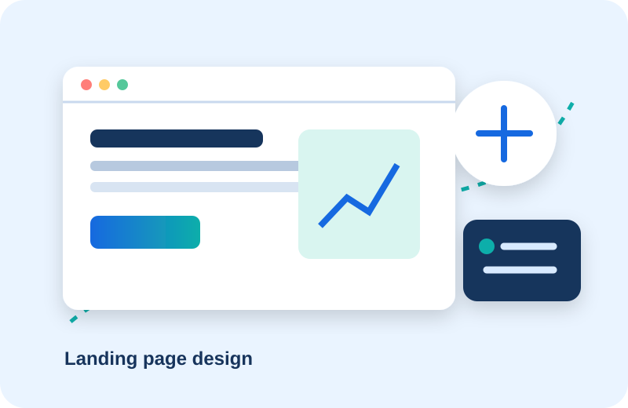

Custom Website Development
Custom design, structured content, responsive builds.
Ideal for: Businesses launching a focused online presence.
Deliverables: documented recommendations, implementation, and review.
Discuss this service →Services
Each engagement is scoped around the outcome you need and the people who will use it.
Custom design, structured content, responsive builds.
Ideal for: Businesses launching a focused online presence.
Deliverables: documented recommendations, implementation, and review.
Discuss this service →Layouts tested for phones, tablets, and desktop screens.
Ideal for: Organizations improving mobile usability.
Deliverables: documented recommendations, implementation, and review.
Discuss this service →
Campaign pages with direct calls to action.
Ideal for: Teams running a specific offer.
Deliverables: documented recommendations, implementation, and review.
Discuss this service →Audit, information architecture, and refreshed design.
Ideal for: Businesses with an outdated site.
Deliverables: documented recommendations, implementation, and review.
Discuss this service →Product journeys and conversion-aware pages.
Ideal for: Businesses selling online.
Deliverables: documented recommendations, implementation, and review.
Discuss this service →Prepared answers, escalation, and oversight planning.
Ideal for: Teams handling repeated questions.
Deliverables: documented recommendations, implementation, and review.
Discuss this service →Questions and routing rules for incoming inquiries.
Ideal for: Sales teams needing clearer handoffs.
Deliverables: documented recommendations, implementation, and review.
Discuss this service →Form, notification, and scheduling workflows.
Ideal for: Teams reducing repetitive coordination.
Deliverables: documented recommendations, implementation, and review.
Discuss this service →Updates, checks, and improvements.
Ideal for: Teams needing ongoing technical care.
Deliverables: documented recommendations, implementation, and review.
Discuss this service →Speed review and prioritized improvements.
Ideal for: Sites needing better user experience.
Deliverables: documented recommendations, implementation, and review.
Discuss this service →Information, credibility, and a clear contact path.
Focused audience journeys, offers, and inquiry tools.
All of the above plus scoped assistance and workflow connections.
Discovery → Strategy → Design → Development → AI integration → Testing → Launch → Support.